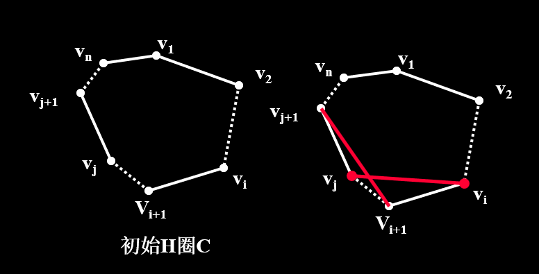

UESTC 图论第4章的笔记
肆 Euler 图与 Hamilton 图 🔗
中国邮递员问题 🔗
- 若$W$是图$G$中一条包含所有边的闭通道,则$W$存在最小长度的充要条件是 ① 每一条边最多重复经过一次 ② 在$G$的每一个圈中,重复经过的边的数目不超过圈的长度的一半
Hamilton 图 🔗
判定问题 🔗
每个点都走一次的问题
- 性质定理(必要条件):若图$G$是$H$图,那么对于任一顶点子集$S$,有$\omega(G - S) \le |S|$
- 证明:设$C$是$G$的圈,$\forall S,S\in V(G)$,易得$\omega(C-S)\leq|S|$(一个圈去掉n个点,最多分成n份),且$\omega(G-S) \leq \omega(C-S)$(去掉同一个点,一个圈可能成两个了,但是一个图不一定),综上可证明
- 应用:为了判定一个图不是$H$图
- 著名的皮特森图符合这个不等式,但是不是$H$图
- Dirac定理/狄拉克定理(充分条件):对于$n\geq3$的图$G$,如果$\delta(G) \geq n/2$,那么这个图就是$H$图
- 证明:
- 设$G$是一个满足定理条件的极大非$H$简单图(显然$G$不可能是完全图,否则就是$H$图了),取任意两个不相邻的顶点$u,v$,下面考虑$G+uv$,由于$G$是极大非$H$图,所以$G+uv$就是一个$H$图了,这个图的所有$H$圈都是包含$uv$的.那一定包含起点是$u$,终点是$v$的$H$路$P=v_1v_2v_3…v_n, u=v_1,v_n=v$,
- 令$S={v_i|uv_{i+1} \in E(G)}$(如果一个点后面的那个顶点与开始的顶点$u$连接,那么这个顶点就在$S$里面,$S$包含的顶点数表示的顶点$u$的度数)
- 令$T={v_j|v_jv\in E(G)}$($T$包含的顶点表示的是$v$的度数)
- 显然 $v_n \not\in S\cup T \Rightarrow |S\cup T| < n$,下面证明$S\cap T = \Phi$,如果是空集,那么由德摩根律可知$|S|+|T|<n$
- 反证,如果不是空集,设$v_i \in S\cap T$
- $v_i$在$S,T$中,所以有$v_1v_{i+1},v_nv_i \in E(G)$,那么$v_1$到$v_n$可以在不经过$v_1v_n$的情况下走一个路,与这个图不是$H$图相悖.所以是空集
- 综上:$d(u)+d(v)=|S|+|T|=|S\cup T|+|S\cap T| < n$,与$\delta(G) \geq n/2$相悖
- 证明:
- Ore定理/奥尔定理(充分条件):对于$n \geq 3$的图$G$,有任意两个不相邻的顶点 $u,v$,有$d(u)+d(v) \geq n$,那么这个图是$H$图
- Bondy定理/邦迪定理(充要条件):图$G$是$H$图,当且仅当他的闭包是$H$图
- 闭图:对于满足$d(u)+d(v) \geq n$的任意一对顶点$u,v$,这两个顶点一定是邻接的,那这个图就是闭图
- 如果两个图是闭图,那么这两个图的并集是闭图(并集不一定)
- 闭包:添最少的边可以将一个非闭图$G$变成闭图$\bar{G}$,那么称$\bar{G}$是图$G$的闭包($\bar{G}$一定是包含图$G$的极小闭图)
- 在度之和大于等于n的不相邻的顶点之间加边就可以找到闭包
- 图的闭包是唯一的
- 对于简单图$G$,如果$G$中有两个不相邻的顶点$u,v$满足$d(u)+d(v) \geq n$,那么这个图是$H$图当且仅当$G+uv$是$H$图(使用这个定理去证明邦迪定理)
- 推论
- 如果图$G$是$n\geq 3$的简单图,若$G$的闭包是完全图,那么$G$是$H$图
- 证明:$n\geq 3$的完全图一定是$H$图,由邦迪定理可以证明
- Dirac定理
- 证明:因为满足条件的图的闭包一定是完全图
- Ore定理
- 证明:因为满足条件的图的闭包一定是完全图
- Bondy-Chvatal定理/邦迪-沙瓦达定理/度序列判定定理
- 证明:因为满足条件的图的闭包一定是完全图(这个证明是完全图挺难的)
- 如果图$G$是$n\geq 3$的简单图,若$G$的闭包是完全图,那么$G$是$H$图
- 闭图:对于满足$d(u)+d(v) \geq n$的任意一对顶点$u,v$,这两个顶点一定是邻接的,那这个图就是闭图
- Bondy-Chvatal定理/邦迪-沙瓦达定理/度序列判定定理(充分条件):设简单图的度序列是$(d_1,d_2,…,d_n),d_1 \leq d_2 \leq d_3 \leq … \leq d_n,n\geq 3$,那么$\forall m < \frac{n}{2}$,满足$d_m > m$或者$d_{n-m} \geq n-m$,那么图$G$是$H$图
非H图问题 🔗
定义:如果一个图$G$的度不弱于其他非$H$图,那么称之为度极大非$H$图
定义:$C_{m,n}=K_m \vee (\bar{K}m + K{n-2m}), 1\leq m<\frac{n}{2}$(不是$H$图,取$S=V(k_m),\omega(G-S)=m+1>|S|=m$,所以不是$H$图)
可以将每一个$C_{m,n}$图看成$\bar{K_m},K_m,K_{n-2m}$三个部分(就像下面例题的图一样),那么这三部分都是使用$\vee$连接起来的,可以想象这三部分的度分别是$m,n-m-1,n-1$,那么可以求出总度数,从而求出总边数
- Chvatal定理/沙瓦达定理:若$G$是$n\geq3$的非$H$简单图,那么$G$度弱于某个$C_{m,n}$图
- 证明:设$G$是度序列为$(d_1,d_2,d_3,…,d_n)$的非$H$简单图,且$d_1 \leq d_2 \leq d_3 \leq … \leq d_n,n\geq 3$,由度序列判定法:存在$m<n/2$,使得$d_m\leq m$,且$d_{n-m}<n-m$.于是$G$的度序列弱于以下序列$$ (\overbrace{m,m,…,m}^{m},\overbrace{n-m-1,n-m-1,…,n-m-1}^{n-2m},\overbrace{n-1,n-1,…,n-1}^{m})$$这个序列就是$C_{m,n}$的度序列
- 推论
- $G$是n阶简单图,若$n \geq 3$且$|E| >\begin{pmatrix} n-1 \ 2 \end{pmatrix} + 1$,那么$G$是$H$图,而且具有n个顶点$\begin{pmatrix} n-1 \ 2 \end{pmatrix}$条边的非$H$图只有$C_{1,n},C_{2,5}$
- 证明 - 先证明是$H$图:反证,图$G$不是$H$图,那么他的度弱于某个$C_{m,n}$图,那么$$|E(G) \leq |E(C_{m,n})| = \frac{1}{2}[m^2+(n-2m)(n-m-1)+m(n-1)]=\begin{pmatrix} n-1 \ 2 \end{pmatrix}+1-\frac{1}{2}(m-1)(m-2)-(m-1)(n-2m-1)\leq \begin{pmatrix} n-1 \ 2 \end{pmatrix}+1$$与沙瓦达定理相悖,所以是$H$图(上面的第一个等式就是求$C_{m,n}$的总度数,在用握手定理) - 再证明后面的:带入上面这个长式子,只有$C_{1,n},C_{2,5}$可以使得$\begin{pmatrix} n-1 \ 2 \end{pmatrix}+1$以为的式子为0
- $G$是n阶简单图,若$n \geq 3$且$|E| >\begin{pmatrix} n-1 \ 2 \end{pmatrix} + 1$,那么$G$是$H$图,而且具有n个顶点$\begin{pmatrix} n-1 \ 2 \end{pmatrix}$条边的非$H$图只有$C_{1,n},C_{2,5}$
- $G$是n阶简单图,若$n \geq 3$且$|E| >\begin{pmatrix} n-1 \ 2 \end{pmatrix} + 1$,那么$G$是$H$图
例题:作出$C_{m,n},n=5$ $C_{m,n}$包含两个图族$C_{1,5},C_{2,5}$

例题:设$G$是度序列为$(d_1,d_2,…,d_n)$的非平凡单图,且$d_1\leq d_2\leq, …,\leq d_n$.证明:若$\not\exists m<\frac{n+1}{2}$,使得:$d_m<m , d_n-m+1<n-m$,则$G$有$H$路
解题思路:加一个点,使用度序列判定定理确定有圈.那么去掉这个点,图也有路 证明:添加一个新的点$v$,与原图中的每一个点都连接,形成一个新图$G_1$,那么这个新图的度序列是$(d_1+1,d_2+1,…,d_n+1,n)$,那么由题目可以知道,$d_m+1 \leq m,d_{n-m}+1 \leq n-m+1 = (n+1)-m$,所以新图存在一个$H$圈,那么原图存在一个$H$路
例题:一只老鼠吃$3 \times 3\times 3$立方体乳酪.其方法是借助于打洞通过所有的27个$1\times1\times1$的子立方体.如果它从一角上开始,然后依次走向未吃的立方体,问吃完时是否可以到达中心点
如果把每个子立方体模型为图的顶点,且两个顶点连线当且仅当两个子立方体有共同面 那么,问题转化为问该图中是否存在一条由角点到中心点的H路 起点作为坐标原点,那么27个子立方体可以编码为:$(1,1,1),(1,1,2),(1,1,3),(1,2,1),(1,2,2),(1,2,3),(1,3,1),…,(3,3,3)$
$G$是偶图,且如果$(1,1,1)$在$X$中,则中心点$(2,2,2)$必在$Y$中,$|X|=14, |Y|=13$.$G$中不存在由点$(1,1,1)$到点$(2,2,2)$的$H$路,否则,将$(1,1,1)$和$(2,2,2)$连线后得到的图$G_1$有$H$圈.但是,$G_1$不能是$H$图.因为在$G_1$中,取$S=Y$,则可得到:$14=\omega(G_1-S)>|S|=13$ 故,老鼠最后不能到达中心点
H图的应用问题(典型:TSP(旅行商问题)问题) 🔗
问题:售货员要到若干城市去售货,每座城市只经历一次,如何安排行走路线,使其行走的总路程最短. 解法:边交换技术(赋权完全图) ① 在赋权完全图中取一个初始$H$圈$C=v_1v_2,…,v_nv_1$ ② 如果$C$中存在$w(v_iv_i+1)+ w(v_jv_j+1)≧w(v_iv_j)+ w(v_i+1v_{j+1})$,则把$C$修改为:$C_1=v_1v_2,…,v_iv_j,…,v_{i+1}v_{j+1},…,v_nv_1$ ③ 反复修改,直到不能修改 就是图中下面的白色边换成红色边

例题:


超哈密尔顿图与超可迹图 🔗
定义:若图$G$是非$H$图,那么对于$G$中的任何一个顶点,都有$G-v$是$H$图,那么这个图就是超$H$图 Peterson图就是一个超$H$图 定义:若图$G$中没有$H$路,但是$\forall v \in V(G),\exists H \subset G-v$,那么称图$G$是超可迹的 Thomassen图就是一个超可迹图(四个区域高度对称)

证明:
- 先证明不是$H$图(图分成ⅠⅡⅢ Ⅳ四个部分,设起点与终点分别是$\alpha ,\beta$ ),不失去一般性,设$\alpha \in I \cup {a}$
- 断言1:$I \cup {a}$中不存在以$a,c,d$三个点中任意两点为断点的$H$路
- 证明:如果存在那么就可以推出Peterson图是$H$图
- 断言2:
- 断言1:$I \cup {a}$中不存在以$a,c,d$三个点中任意两点为断点的$H$路